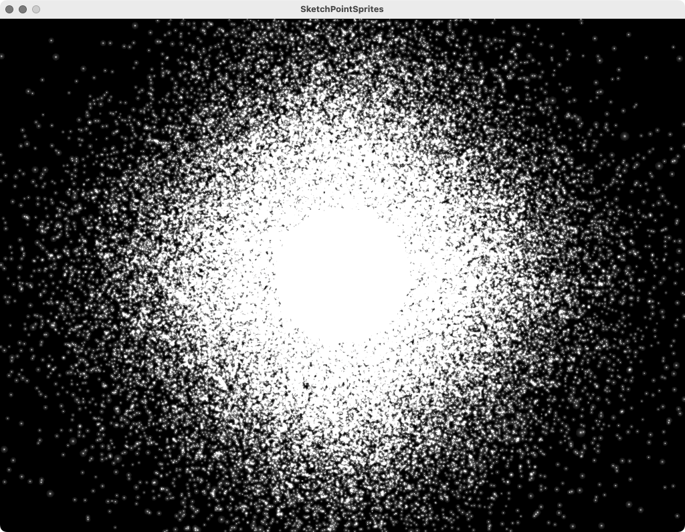

Point Sprites in GLSL

a point sprite is an OpenGL method to render a single vertex or point as a texture facing the screen plane ( i.e billboards ). it therefore e.g allows to render a single point as something that looks like a glowing sphere.
it was quite a challenge to get point sprites to work in processing … it used to be so simple in old OpenGL. with current OpenGL (3.0++) most things need to be handled in GLSL shaders.
well, the main challenges were to understand that GL_PROGRAM_POINT_SIZE_EXT would need to be enabled in order to change the point sprite size dynamically within a shader. another challenge was to accept that the actual drawing of the points as point sprites would need to be manually handled in a raw OpenGL Vertex Buffer Object (VBO). and the last big challenge was to accept that the texture mechanism supplied by processing does not work for passing textures to GLSL and therefore the point sprite texture would need to be loaded manually.
on the upside: the rendering of point sprites now runs extremely fast. a MacBook Pro with an AMD Radeon Pro 5300M can easily render more than a million point sprites with a 10×10px point size at 60fps.
the entire sketch can be found here: SketchPointSprites:
PointSprites fPointSprites;
PVector[] fPoints;
void setup() {
size(1024, 768, P3D);
hint(DISABLE_DEPTH_TEST);
blendMode(ADD);
/* create array of points */
fPoints = new PVector[100000];
for (int i=0; i < fPoints.length; i++) {
fPoints[i] = new PVector(random(-200, 200), random(-200, 200), random(-200, 200));
}
/* create point sprites */
PGL pgl = beginPGL();
fPointSprites = new PointSprites(this, pgl, fPoints, dataPath("sprite.png"));
endPGL();
}
void draw() {
background(0);
/* rotate view */
translate(width/2, height/2);
rotateX(frameCount * 0.003);
rotateY(frameCount * 0.02);
/* draw a *normal* shape */
fill(255);
noStroke();
sphere(100);
/* move point sprites */
if (mousePressed) {
for (int i=0; i < fPoints.length; i++) {
final float mOffset = 10;
fPoints[i].x += random(-mOffset, mOffset);
fPoints[i].y += random(-mOffset, mOffset);
fPoints[i].z += random(-mOffset, mOffset);
}
fPointSprites.update(); // call this when point locations have changed
}
/* set point sprite size */
fPointSprites.set_point_size(map(mouseX, 0, width, 0.1, 64));
/* draw point sprite */
PGL pgl = beginPGL();
fPointSprites.draw(pgl);
endPGL();
}
PointSprite.pde:
import java.nio.ByteBuffer;
import java.nio.ByteOrder;
import java.nio.FloatBuffer;
import java.nio.IntBuffer;
import java.net.URL;
import com.jogamp.opengl.GL;
import com.jogamp.opengl.GL2;
import com.jogamp.opengl.GLProfile;
import com.jogamp.opengl.util.GLBuffers;
import com.jogamp.opengl.util.texture.TextureData;
import com.jogamp.opengl.util.texture.TextureIO;
import static com.jogamp.opengl.GL2ES3.*;
public static class PointSprites {
private PShader fPointSpriteShader;
private static final String VERTEX_SHADER_FILE = "point_sprite_vert.glsl";
private static final String FRAGMENT_SHADER_FILE = "point_sprite_frag.glsl";
private static final int VERT_CMP_COUNT = 4; // assumes 4 components (x, y, z, w)
private final PVector[] fPoints;
private float[] fVBOFloatArray;
private FloatBuffer fVBOFloatBuffer;
private int fVBOBufferID;
private int fTextureID;
private float fPointSize;
public PointSprites(PApplet p, PGL pgl, PVector[] points, String path_to_sprite) {
fPoints = points;
fPointSize = 1.0f;
setupShader(p);
setupVBO(pgl);
setupTexture(pgl, path_to_sprite);
update();
}
public void draw(PGL pgl) {
pgl.enable(GL2.GL_PROGRAM_POINT_SIZE_EXT); // enable setting point size in shader
fPointSpriteShader.bind();
pgl.bindBuffer(PGL.ARRAY_BUFFER, fVBOBufferID);
pgl.bufferData(PGL.ARRAY_BUFFER, Float.BYTES * fVBOFloatArray.length, fVBOFloatBuffer, PGL.DYNAMIC_DRAW);
final int mPointPositionLoc = pgl.getAttribLocation(fPointSpriteShader.glProgram, "point_position");
pgl.enableVertexAttribArray(mPointPositionLoc);
pgl.vertexAttribPointer(mPointPositionLoc, VERT_CMP_COUNT, PGL.FLOAT, false, 0, 0);
final int mHeightNearPlaneLoc = pgl.getUniformLocation(fPointSpriteShader.glProgram, "height_near_plane");
float mFOVY = PApplet.radians(60);
IntBuffer viewport = GLBuffers.newDirectIntBuffer(4);
pgl.getIntegerv(GL_VIEWPORT, viewport);
float heightOfNearPlane = PApplet.abs(viewport.get(3) - viewport.get(1)) / (2 * PApplet.tan(0.5 * mFOVY));
pgl.uniform1f(mHeightNearPlaneLoc, heightOfNearPlane);
final int mPointSizeLoc = pgl.getUniformLocation(fPointSpriteShader.glProgram, "point_size");
pgl.uniform1f(mPointSizeLoc, fPointSize);
final int mPointTextureLoc = pgl.getUniformLocation(fPointSpriteShader.glProgram, "point_texture");
pgl.uniform1i(mPointTextureLoc, 0);
pgl.activeTexture(GL.GL_TEXTURE0);
pgl.bindTexture(GL.GL_TEXTURE_2D, fTextureID);
pgl.bindBuffer(PGL.ARRAY_BUFFER, 0);
pgl.drawArrays(GL.GL_POINTS, 0, fPoints.length);
pgl.disableVertexAttribArray(mPointPositionLoc);
fPointSpriteShader.unbind();
}
public void set_point_size(float point_size) {
fPointSize = point_size;
}
private void setupShader(PApplet p) {
fPointSpriteShader = p.loadShader(FRAGMENT_SHADER_FILE, VERTEX_SHADER_FILE);
}
private void setupVBO(PGL pgl) {
fVBOFloatArray = new float[VERT_CMP_COUNT * fPoints.length];
fVBOFloatBuffer = allocateDirectFloatBuffer(fVBOFloatArray.length);
IntBuffer intBuffer = IntBuffer.allocate(1);
pgl.genBuffers(1, intBuffer);
fVBOBufferID = intBuffer.get(0);
}
private void setupTexture(PGL pgl, String path_to_sprite) {
fTextureID = loadTexture(pgl, path_to_sprite);
}
private int loadTexture(PGL gl, String texture_path) {
try {
URL texture = new File(texture_path).toURI().toURL();
TextureData data = TextureIO.newTextureData(GLProfile.getDefault(), texture, false, TextureIO.PNG);
int level = 0;
int mTextureID = 0;
IntBuffer textureName = GLBuffers.newDirectIntBuffer(1);
gl.genTextures(1, textureName);
mTextureID = textureName.get(0);
gl.bindTexture(GL_TEXTURE_2D, mTextureID);
{
gl.texImage2D(GL_TEXTURE_2D,
level,
data.getInternalFormat(),
data.getWidth(), data.getHeight(),
data.getBorder(),
data.getPixelFormat(), data.getPixelType(),
data.getBuffer());
gl.texParameteri(GL_TEXTURE_2D, GL_TEXTURE_BASE_LEVEL, 0);
gl.texParameteri(GL_TEXTURE_2D, GL_TEXTURE_MAX_LEVEL, level);
// TODO test with colors
//IntBuffer swizzle = GLBuffers.newDirectIntBuffer(new int[]{GL_RED, GL_GREEN, GL_BLUE, GL_ONE});
//gl.texParameteriv(GL_TEXTURE_2D, GL_TEXTURE_SWIZZLE_RGBA, swizzle);
//gl.glTexParameterIiv(GL_TEXTURE_2D, GL_TEXTURE_SWIZZLE_RGBA, swizzle);
//destroyBuffer(swizzle);
}
gl.bindTexture(GL_TEXTURE_2D, 0);
return mTextureID;
}
catch (IOException ex) {
ex.printStackTrace();
return 0;
}
}
private FloatBuffer allocateDirectFloatBuffer(int n) {
return ByteBuffer.allocateDirect(n * Float.BYTES).order(ByteOrder.nativeOrder()).asFloatBuffer();
}
public void update() {
for (int i=0; i < fPoints.length; i++) {
final int j = i * VERT_CMP_COUNT;
final PVector p = fPoints[i];
fVBOFloatArray[j + 0] = p.x;
fVBOFloatArray[j + 1] = p.y;
fVBOFloatArray[j + 2] = p.z;
fVBOFloatArray[j + 3] = 1.0;
}
fVBOFloatBuffer.rewind();
fVBOFloatBuffer.put(fVBOFloatArray);
fVBOFloatBuffer.rewind();
}
}
vertex shader:
#version 330 core
uniform mat4 transform;
uniform float height_near_plane;
uniform float point_size;
layout (location = 0) in vec4 point_position;
void main() {
gl_Position = transform * vec4(point_position.xyz, 1.0);
gl_PointSize = (height_near_plane * point_size) / gl_Position.w;
}
fragement shader:
#version 330 core
uniform sampler2D point_texture;
out vec4 color;
void main() {
color = texture(point_texture, gl_PointCoord);
}